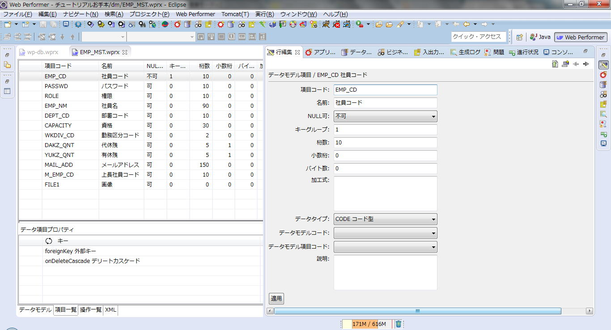
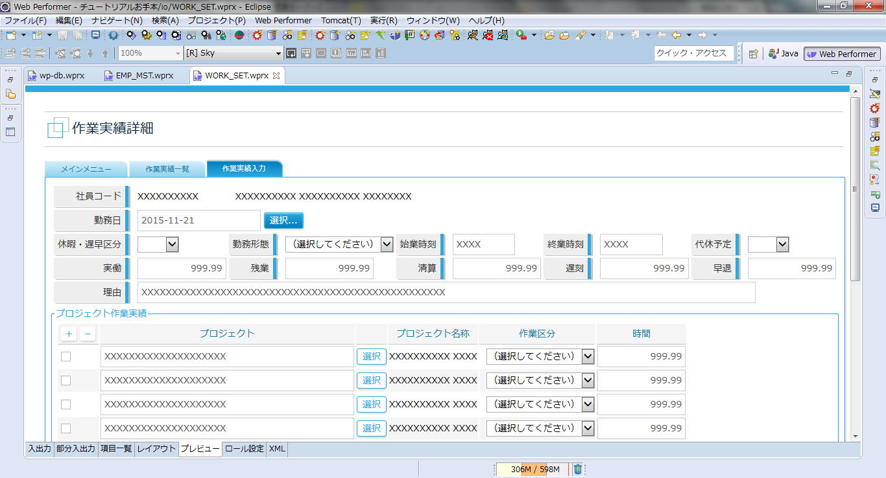

TEL. 022-200-9006
〒980-0014 宮城県仙台市青葉区本町2-3-10 仙台本町ビル
１．データベース接続定義
２．モデル定義
３．IO定義（画面/メニュー）
４．ビジネスプロセス定義
５．アプリケーション定義
６．ビルド、動作確認
JDBC接続とデータソース接続の二通りが選べます。
データソース接続の場合は、％TOMCAT_HOME%/conf/Catalina/localhost以下に接続定義XML置きます
テーブル/ビューに該当するモデルを定義します。
「項目コード、名前、NULL可、キーグループ、桁数、小数桁、バイト数、加工式、データタイプ、データモデルコード、データモデル項目コード、説明」が最低限の設定項目で、各列にプロパティを設定することが可能。例えば、日本語列を使う場合は、プロパティに設定します。
加工式にはWebPerformer独自の構文を設定可能で、システム変数、関数、ロジック等を記述出来ます。

モデル定義はデータベースからリバースエンジニアリングは出来ません。
代わりに↓のようなCSVを読み込むことで一括作成が可能です。
モデルを定義すると、DDLを自動生成します。
SQLServer以外はDBに接続しテーブル生成します。
（SQLServerだけはなぜか出力されたDDLを自分で実行する必要がある。）
例として編集画面を定義します。
入出力タイプにより様々な画面を作成することが可能です。
今回はIO（入出力を伴う画面）を選択
対象条件には上位画面からパラメータを渡され起動することを想定し、
「EMP_CD = @1 AND WK_DATE = DATE(@2)」と記述します。
※@1は１番目のパラメータという意味
項目一覧タブで項目を入力するか、もしくは、
レイアウトタブでドラッグアンドドロップで項目を投げ込んだり、
マウス操作で位置や幅を調整します。
選択リストの場合等はプロパティを設定します。
プレビュータブで大まかな画面イメージも確認できます。

まず、各モデルにロジックを定義します。（必須ではありません。）
操作タイプはINSERT,DELETE,UPDATE,STORE,ERASE等
続いて、ビジネスプロセスを定義します。
IF,END等で分岐を定義しつつ、CALLで処理を呼びます。
ビジネス・プロセスからINSERT,DELETE,UPDATE,STORE,ERASE等を呼ぶ事も可能ですが、
事前にモデルで定義したロジックも呼ぶことができます。
コードアシスト等の機能はないので、複雑なロジックを作るのは厳しいかもしれません。
ただし、Javaのコードを一切書く必要がないので、非Java技術者には非常に強力な機能です。
アシストさんのProgressCorticonと組み合わせれば、ここがもっと簡単に実装できるようです。
IO定義の登録ボタンにこのビジネスプロセスを呼び出すように定義し完成です。
初期画面等を設定します。
どのIOを使用許可するか定義します。
アプリケーション生成時にテーマを指定することで画面デザインが適用されます。
Tomcat起動し、ブラウザからアクセス
テーマを変えてアプリケーション生成を再実行すれば簡単に見栄えが変わります。
自分でHTMLをカスタマイズすることも可能ですが、それはまた別の機会に紹介することとします。
以上です。
〒980-0014
宮城県仙台市青葉区本町2-3-10
仙台本町ビル
TEL 022-200-9006
FAX 022-721-3503
URL http://nanairo-inc.jp
採用サイト https://nanairo-inc.jp/graduate_recruitment
Mail
ishimori_yuzuru☆nanairo-inc.jp
担当 石森